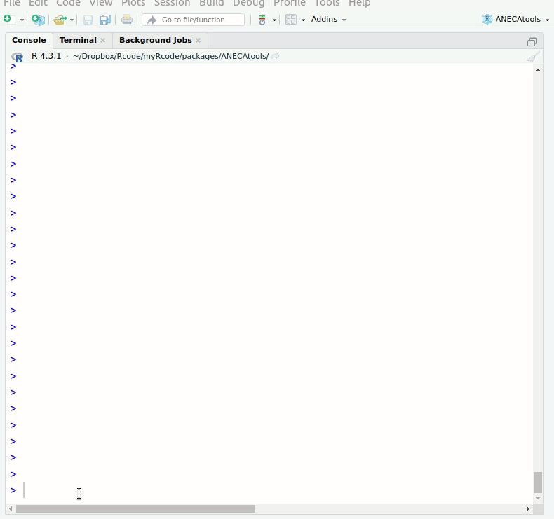

ANECAtools es un paquete de R con herramientas para facilitar el proceso de solicitud de acreditación de profesorado ante la ANECA, automatizando tareas en lo posible. Puede ayudarte a introducir la información mucho más rápido, tanto en la aplicación PEP como ACADEMIA.
Entre otras funciones, ANECAtools facilita y agiliza la introducción de los datos de publicaciones a partir de un archivo BibTeX.
También permite extraer automáticamente la página inicial y final de muchos archivos PDF a la vez, así como agruparlos en un único archivo listo para subir a la plataforma.
Instalación
Para usar ANECAtools tienes que tener R instalado. Puedes descargarlo gratuitamente en https://cran.r-project.org/. Además recomiendo instalar una interfaz como Rstudio: https://posit.co/download/rstudio-desktop/. Aquí tienes todo el proceso explicado paso a paso.
Además es necesario tener instalado el paquete remotes para instalar ANECAtools desde GitHub. Una vez abierto R/Rstudio, ejecutar
install.packages("remotes") # instala el paquete remotes si no lo tienes instaladoTambién puede ser necesario instalar Rtools. Para comprobarlo, ejecutar:
install.packages("pkgbuild")
pkgbuild::has_build_tools()Entonces ya podremos instalar ANECAtools (este proceso solo hay que realizarlo la primera vez):
remotes::install_github("Pakillo/ANECAtools")Ejemplos de uso
Para usar ANECAtools, primero debemos cargar el paquete:
Introducir publicaciones
Para introducir los datos de las publicaciones (autores, título, revista, páginas, ISSN, etc) simplemente tenemos que pasarle un archivo con las referencias en formato BibTex. Este archivo podemos generarlo a partir de muchas fuentes, por ejemplo exportando nuestras referencias desde Zotero.
introducir_publicaciones("mis_papers.bib")

Si quieres ir más rápido o lento, puedes ajustar la velocidad de pegado (ver ayuda de la función).
Introducir proyectos, congresos, etc
Para introducir la información en cualquiera de las otras secciones, puede utilizarse la función introducir_campos. Esta función leerá todos los campos de cualquier data frame y los irá copiando secuencialmente al portapapeles (y a la consola de R) para poder pegarlos en la aplicación de la ANECA.

Extraer páginas de archivos pdf
Extraer página inicial y final de un archivo PDF:
pdf_extraer_pags("articulo.pdf")Extraer página inicial y final de muchos PDF a la vez:
archivos <- list.files("carpeta_pdfs", full.names = TRUE)
lapply(archivos, pdf_extraer_pags)Combinar pdfs en un único archivo
pdfs <- list.files("PDF_SUBSET", full.names = TRUE)
pdf_combinar(pdfs)Comprimir pdf
pdf_comprimir("justificantes.pdf")